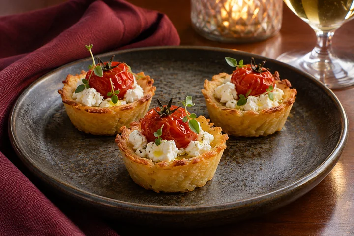
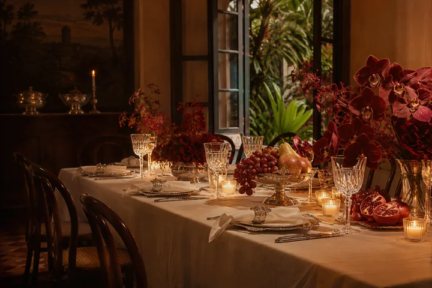

Tartelete de mandioca
Tomate assado, queijo de cabra e ervas frescas. Um serviço volante dá tempo para os convidados chegarem e se encontrarem.

Uma mesa pensada para acompanhar o ritmo da festa. Explore um jantar em três tempos e leve suas preferências para o pedido.
Percorrer o jantar ↓Descreva o ritmo do encontro: chegada em horários diferentes, refeição sentada ou uma noite em que todos circulam. A partir disso, o buffet conversa com você sobre montagem, equipe e sequência do menu.